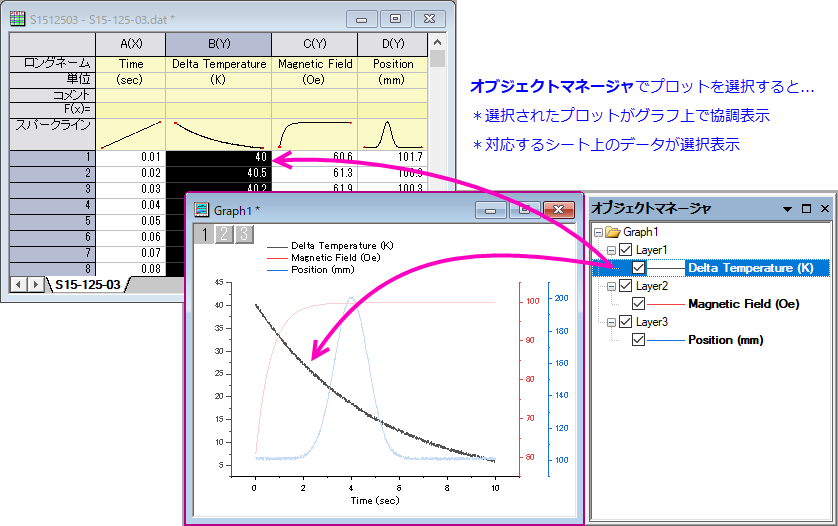
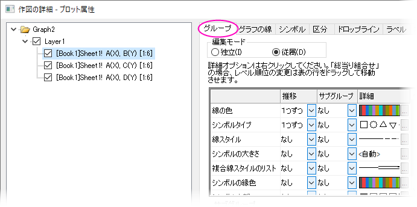
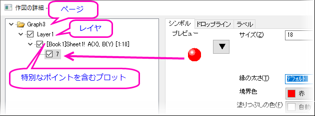
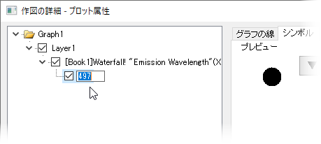
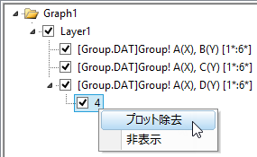
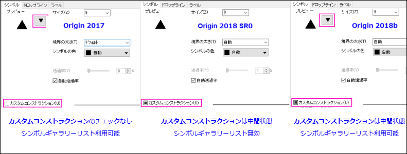
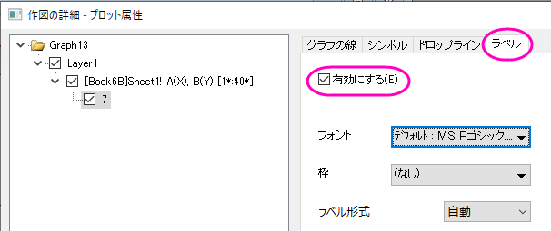
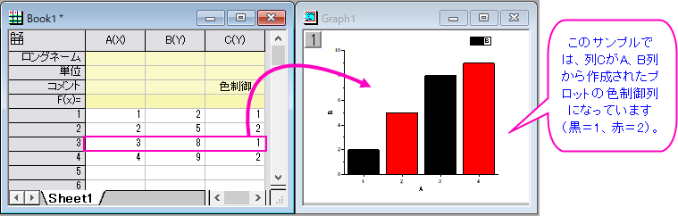

プロット要素を編集する
Customize-Plot-Element
「作図の詳細」ダイアログボックスのページレベルやレイヤレベルとは違い、プロットレベルの編集項目はプロットタイプやグループ化されたデータセットにより異なります。このページでは、プロットレベルでの一般的な設定について説明します。
多くのプロットで共通した設定項目についてはこちらを参照してください。
-
データプロットの選択と編集
グラフウィンドウで・・・
- プロットを一度 クリックして選択します。
- CTRLキーを押しながら、個別のデータポイントをクリックして選択します。
- プロットグループを選択するには、SHIFTキーを押しながらプロットをクリックします。
 |
以前のバージョンでのプロット選択操作から変更されています。Origin 2020より前のバージョンでは、独立（非グループ化）プロットにおいて、プロット上で一度クリックするとプロット全体を選択できます。ゆっくりと2回クリックすると、個別のポイントを選択できます。従属（グループ化）プロットの場合は、プロット上で一度クリックするとグループを選択できます。ゆっくりと2回クリックすると、個別のプロットを選択できます。ゆっくりと3回クリックすると、個別のポイントを選択できます。2020より前のバージョンの動作に戻すには、システム変数 @GSM=0に設定します。
|
オブジェクトマネージャで・・・
- プロットアイコンをクリックします。同時に、グラフウィンドウでプロットが選択され、ワークシートではデータが選択されます（逆に、グラフウィンドウでプロットを選択すると、オブジェクトマネージャで対応するプロットアイコンが選択され、ワークシートでデータが選択されます）。
- 
選択項目の編集
- いくつかのプロットプロパティは、ミニツールバーまたは書式およびスタイルツールバーボタン（プロットシンボルの色など）で素早く編集できます。ただし、アクセスできるプロパティは一般的に使用されるものに制限されています。
- ほかに、選択項目を右クリックして開くショートカットメニュー（プロットタイプの変更など）から選択して編集できます。
- さらに詳細な編集は、グラフウィンドウ内でダブルクリックして開く作図の詳細ダイアログで行います。あるいは、グラフウィンドウをアクティブにして、フォーマット: 作図の詳細（ページ/レイヤ/プロット属性）のいずれかを選択します。
グループ化したデータプロットの編集
データプロットがレイヤ内でグループ化している場合、Originはデフォルトで各データプロットの表示プロパティを自動設定します。しかし、作図の詳細ダイアログを使ってグループ化データプロットは自由に編集できます（グループ化データプロットの一部はスタイルツールバーのカラーリストで編集することもできます）。
- 
詳細は、Originヘルプの『作図の詳細「グループ」タブでの制御』をご覧下さい。
グラフの種類を素早く切り替える
いくつかの共通形式プロットのタイプに、プロットを素早く切り替えることが出来ます。
- プロットをダブルクリックして、作図の詳細ダイアログを開きます。代替のプロットタイプは、ダイアログボックスの下部にあるプロットタイプの下に表示されます。
- グラフウィンドウまたはオブジェクトマネージャのプロットを右クリックし、ショートカットメニューからプロットタイプの変更を選択します。
- 上記の通りに1つまたは複数のプロットをクリックして選択し、2Dグラフツールバーの適切なグラフボタンをクリックします。
作図の詳細とショートカットメニューには、グラフ種類を素早く切り替えできるもののみ表示されます。ツールバーボタンを使ってグラフの種類を切り替える場合、対応していないグラフ対応を選択する「注目」ダイアログボックスが開きます。
独立データポイントの編集
散布図や棒グラフのようなグラフは、ある1つのデータポイントだけの表示属性を変更することができます。
-

特別なポイントを作成
特別なポイントを編集するには、いくつかの方法があります。
- ポイント上でゆっくり2回クリックします。ダブルクリックではないので注意してください。あるいは、CTRLキーを押しながらクリックします。どちらの場合も、1つのポイントが選択され、ミニツールバーやスタイルおよび書式ツールバーボタンで編集できます。
- CTRLキーを押しながら、データポイントをダブルクリックします。これにより、選択されたポイント用の作図の詳細ダイアログが開くので、必要に応じて設定を変更します。
作図の詳細で特別なポイントを編集
- 作図の詳細ダイアログ左側ににあるツリーで、データプロットの下に特別なデータポイントが表示されます。
- 特別なポイントのアイコン右側に、このデータポイントのワークシートの行番号が表示されます。
- 作図の詳細の左側パネルで、特定のポイントを選択すると、右側のタブのコントロールを使用して編集できます。
- その後、この特別なポイントを編集する場合、もう一度クリックして選択し、ミニツールバーまたはスタイルおよび書式ツールバーボタンで編集します。あるいは、このポイント上でダブルクリックして作図の詳細を開き、編集します。
- 
 |
プロットの最初または最後に特別なポイントを追加することは、たとえば多くのデータポイントの折れ線グラフのように、必ずしも簡単ではありません。しかしながら、簡単で間違いのないテクニックがあります。
- プロット上の任意の場所で特別なポイントを選択し、ダブルクリックして作図の詳細を開きます。
- 作図の詳細の左側のパネルで、ポイントインデックス番号を1回クリックし、インデックス番号が編集可能になるまで待ちます。
- 
- プロットの最初のポイントに特別なポイントを追加するには、開始と入力します。 最後のポイントに追加するには、終了と入力します。最初または最後のポイントのインデックス番号がわかっている場合は、代わりにそれを入力できます。
- 編集ボックスの外側をクリックします。必要に応じて、その他の特別なポイントのカスタマイズを行うには、適用をクリックするか、OKをクリックして、作図の詳細を閉じます。プロットの最初または最後に特別なポイントが追加されます。
|
プロットから特別なポイントを削除
特別なポイントのプロパティを削除して、元のデータプロットの表示に戻すには、
- ポイント上で右クリックし、ショートカットメニューから特別なポイントを削除を選択します（ワークシートのデータをクリアを選択するとワークシート上のデータが削除されるので注意してください）。
- オブジェクトマネージャで特別なポイントを選択して右クリックし、削除を選択します。
- グラフ上のポイントを選択してDeleteキーを押すか、作図の詳細の左側でポイントを選択し、右クリックメニューから削除を選択します（これらの操作では、ワークシートからデータポイントが削除されません ）。
- 
アップグレードユーザ向け情報
最近のバージョンのアップグレードユーザーは、単一ポイントをカスタマイズするための作図の詳細のデフォルト設定に若干の違いがあります。

データポイントを1つだけ編集する
- Origin 2017では、カスタムコンストラクションにチェックされていてもいなくても、ポイントを編集できます。
- Origin 2018 SR0では、中間状態のカスタムコンストラクションボックス またはボックスのチェックをクリアする必要があります。
- Origin 2018bから、カスタムコンストラクションの状態に関係なく、ポイントを編集できます。
シングルラベルを編集する
- 全ポイントでラベルが有効になっている場合、ラベル上でCTRLキーを押しながら一度クリックすれば、書式ツールバーを使って1つのラベルを編集できます。あるいは、編集したいポイントをCTRLキーを押しながらダブルクリックすると作図の詳細が開き、ラベルタブの様々なオプションを使ってラベルの編集が可能です。
- 一点のみラベルを表示したい場合、CTRLキーを押しながらクリックして1点(シンボルでも棒でも)のみ選択し、ミニツールバーのデータラベルを表示ボタン
 をクリックします。ラベルは書式ツールバーで編集できます。あるいは、CTRLキーを押しながらラベルを付けたい点をダブルクリックします。これにより作図の詳細ダイアログが開くので、ラベルタブで有効にするにチェックを付け、ラベルのスタイルなどの編集が可能です。いずれの場合も、作図の詳細のラベルタブは、現在のラベルの状態（表示、フォント、サイズなど）を反映します。
をクリックします。ラベルは書式ツールバーで編集できます。あるいは、CTRLキーを押しながらラベルを付けたい点をダブルクリックします。これにより作図の詳細ダイアログが開くので、ラベルタブで有効にするにチェックを付け、ラベルのスタイルなどの編集が可能です。いずれの場合も、作図の詳細のラベルタブは、現在のラベルの状態（表示、フォント、サイズなど）を反映します。
- 
|
カスタムラベルの位置を変更するには、マウスでドラッグします。
|
データプロットをポイント毎に編集する
上述の通り、単独のポイントまたはラベルを編集できるほか、 編集用データセットを使用してデータポイントのプロパティを体系的に変更することもできます。つまり、ワークシート列の値を使用して、シンボルの色、形やスタイル（塗りつぶし、空白など）を設定可能です。この列の値を使って対応する行のポイントプロパティを制御します。
作図の詳細ダイアログボックスで、関連するコントロール（色、シンボルの形状など）にあるドロップダウンリストからデータセットを選択することで、編集用データセットを割り当てます。

詳細は、このページをご覧ください。